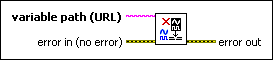

Unforce Variable VI
Owning Palette: Forcing VIs
Requires: Base Development System (Real-Time, Windows)
Discontinues forcing on an I/O variable or I/O alias and returns control of the I/O value to the NI Scan Engine.

 Add to the block diagram Add to the block diagram |
 Find on the palette Find on the palette |